Tutorial¶
This tutorial will walk you on how to use the QGIS AgrooTool Color Segmenter with a real example.
If QGIS AgrooTool Color Segmenter is not already installed, see installation.
We will processed an orthomosaic to segment pumpkins in a crop field. At the end of this tutorial, you may expect your result orthomosaic to look like this:
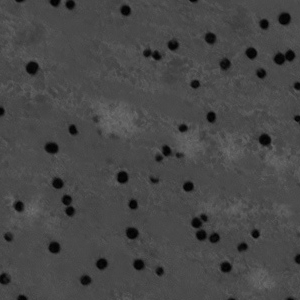
The example dataset can be downloaded from Zenodo on this link: https://zenodo.org/record/8254412.
Save the dataset in a easy to reach location, for example /home/Documents/AgroTool_tutorial. The dataset contains the following files:
an orthomosaic from a pumpkin field with orange pumpkins on a brown/green field
20190920_pumpkins_field_101_and_109-cropped.tif.a crop of the orthomosaic
crop_from_orthomosaic.tif.an annotated copy of the cropped orthomosaic
crop_from_orthomosaic_annotated.tif.
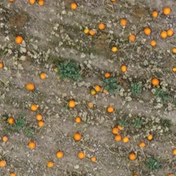
crop_from_orthomosaic.tif
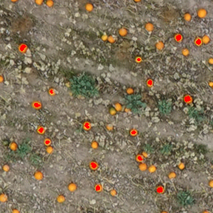
crop_from_orthomosaic_annotated
You can notice that crop_from_orthomosaic.tif and crop_from_orthomosaic_annotated.tif are identical images, execept for the annotations (red blobs) on some of the pumpkins.
In future uses of the plugin, make sure that this two images are identical — here you can find out why.
Below we will provide step-by-step instructions on how to use AgroTool Color Segmenter:
Open a blank project QGIS and save it under the name
example_tutorial.qgz, save it in a easy to reach location, for example/home/Documents/AgroTool_tutorial.Drag the files
20190920_pumpkins_field_101_and_109-cropped.tif,crop_from_orthomosaic.tifandcrop_from_orthomosaic_annotated.tiffrom your folder into the Layer menu. Alternatively, check the official QGIS tutorial Loading Data into the Map.
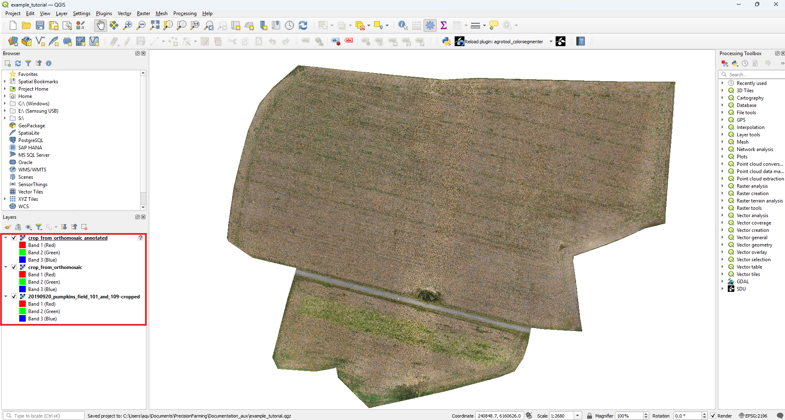
Open the AgrooToool Color Segmenter plugin. You can do this by clicking on the plugin icon in the upper toolbox or by accessing the menu with the same logo within the Processing Toolbox on the right.
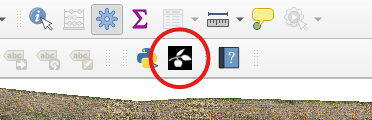
ToolBar button
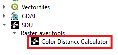
Processing ToolBar menu
The AgrooToool Color Segmenter menu will pop up. This contains multiple configuration parameters to access the different options of the plugin (see How-to Guide), while other options are selected by default.
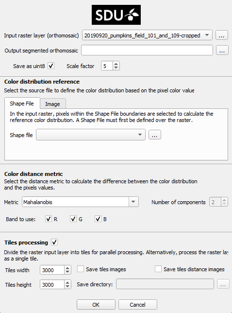
Open the Input raster layer (orthomosaic) drop-down menu and make sure to select the file
20190920_pumpkins_field_101_and_109-cropped.tifcorresponding to our input raster layer.Now click on the three-dot button next to the Output segmented orthomosaic text bar. This will open a window where you can select where to save the segmented orthomosaic plugin result. For this tutorial, we’ll save the result to
/home/Documents/AgroTool_tutorialand name it astutorial_color_distance.
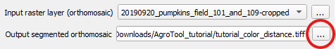
The default configuration expect to work with shape files, you can explore this option here. For our tutorial, we will use the calculation based on images. First, select the Image tab, which will open the image menu. As you can see, the default image format is
.tiffbut its possible to use .jpg images. Open the Reference image drop-down menu and select the filecrop_from_orthomosaic.tif, in the Pixel mask menu selectcrop_from_orthomosaic_annotated.tif.
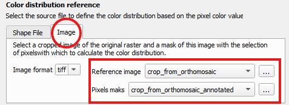
At this point everything is ready! Simply press the button to begin the processing. You’ll see a window with a progress bar. You can click
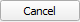
at any time to stop the operation.
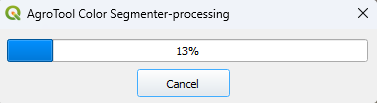
9. Once the processing is complete, you’ll see that the resulting orthomosaic tutorial_color_distance.tif has been automatically added to the current project.
It is an orthomosaic with the same appearance as the entrance but in grayscale where all the pumpkins appear segmented in black.
Contretly all the pixels within the reference color distribution are segmented, you can explore this operation in our Background section.
You can also find the result at /home/Documents/AgroTool_tutorial/tutorial_color_distance.
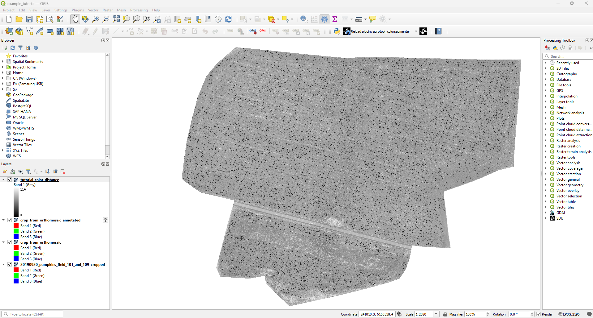
Congratulations, you have segmented your first orthomosaic with AgroTool Color Segmeneter!
This tutorial serves as a first approach to the tool, but there are many more options to explore. We’ve just created a color segmentation based on the Mahalanobis distance, but we can also do so using Gaussian mixture models distance metrics.
Additionally we can compute the color distribution using a shape file instead of images; change the tiles dimension involved in the multi-tiles simultaneous processing, and save tiles image as a dfferent result.
There are many other options. Feel free to explore our documentation in depth!